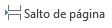

Configuraciones de página
Saltos de linea
-
En Word al escribir un texto hay que teclearlo sin más. Los saltos de línea se realizan automáticamente
al llegar al margen derecho. Si quieres realizar un cambio de línea, se utiliza la tecla INTRO
(también llamada ENTER o retorno de carro).
-
Word se encarga de que el texto que vas introduciendo se contenga dentro de unos márgenes y pasa a la línea inferior
cuando alcanza el margen derecho. Pero conviene saber que, si algún momento quieres realizar un salto de línea de
forma voluntaria, lo puedes hacer con la combinación de teclas MAYÚS+INTRO.
Saltos de página
Los saltos de página se insertan automáticamente cuando llegamos al margen inferior de una página y seguimos escribiendo.
También se pueden insertar de forma manual si queremos pasar a la página siguiente aunque no hayamos llegado al final, desde la pestaña Insertar > grupo Páginas > opción Salto de página. 
Observación: En la pestaña Inicio > grupo Párrafo, se cuenta tambien con la
herramienta Mostrar todo  , la cual permite saber si un texto ha sido dividido en bloques
mediante saltos de línea o párrafos.
, la cual permite saber si un texto ha sido dividido en bloques
mediante saltos de línea o párrafos.
Si la utilizamos, el documento se llenará de marcas como las que ves en la imagen:

Además de los saltos de línea y los cambios de párrafos también se muestran otros símbolos como un punto medio que señala que hay un espacio separando las palabras, o una marca de salto de página.
Para ocultar de nuevo estas marcas debemos pulsar de nuevo el botón .
Encabezado y pie de pagina
Un encabezado es un texto que se insertará automáticamente al principio de cada página. Esto es útil para escribir textos como, por ejemplo, el título del trabajo que se está escribiendo, el autor, la fecha, etc.
El pie de página tiene la misma funcionalidad, pero se imprime al final de la página, y suele contener los números de página.
Para modificarlos vamos a la pestaña Insertar y entonces hacemos clic en alguno de los dos botones (Pie de página o Encabezado) y seleccionamos la opción Editar.
Se mostrará una nueva pestaña, Herramientas para encabezado y pie de página > Diseño, que contiene los iconos con todas las opciones disponibles:

Observa que ha aparecido el Encabezado delimitado por una línea punteada y con los elementos que lo contienen en modo edición. Ahí podremos teclear el encabezado y, si lo creemos conveniente, insertar numeración de página, fechas o cualquier otro elemento de la barra de herramientas, como vamos a ver a continuación.

Una vez hayamos acabado de editar el encabezado o pie de página finalizaremos haciendo clic en el botón Cerrar encabezado
y pie de página, a la derecha de la cinta  .
.
Mediante estos botones podemos pasar del encabezado al pie y viceversa.
Elementos rápidos https://www.aulaclic.es/word-2010/a_8_3_1.htm
Dentro de esta misma pestaña Diseño del encabezado de página > Grupo Insertar > Elementos rápidos

Permite, desde la opción Propiedad del documento, escoger distintos elementos de un listado desplegable. En ocasiones esta opción ahorra tiempo ya que permite, por ejemplo, insertar con un sólo clic el autor del documento o la fecha.

La opción de Elementos rápidos también está disponible directamente en la pestaña Insertar, pero se incluye en la de Diseño de los encabezados y pies de página porque es una herramienta muy útil en este tipo de ocasiones. De hecho, el elemento Autotexto es uno de los que más se prestan a la personalización para mejorar la comodidad de la redacción en Word. Así que probablemente lo utilizarás más a menudo desde la pestaña Insertar directamente. Con él podemos insertar rápidamente párrafos completos y demás contenido que solemos repetir constantemente con un sólo clic, como cabeceras o despedidas en las cartas.
En la pestaña Diseño también encontraremos el siguiente grupo de opciones:
- Primera página diferenteSi marcamos esta casilla podemos definir un encabezado y pie diferente para la primera página. Esta opción está pensada por ejemplo, para cuando la primera página es la portada del documento y no conviene que aparezca el mismo encabezado o pie con el número de la página.
- Páginas pares e impares diferentes. Si marcamos esta casilla podemos definir un encabezado y pie diferente para las páginas pares e impares. Por ejemplo para imprimir el número de página se imprime a la izquierda en las páginas impares y en las páginas pares imprimirlo a la derecha.
Número de página
Cuando creamos un documento, Word numera las páginas para poder referenciarlas, ese número es el que aparece en la parte izquierda de la barra de estado, pero este número de página no aparece en el documento.
Si queremos que los números de página aparezcan en nuestro documento cuando lo imprimamos deberemos insertarlos desde la pestaña Insertar > grupo Encabezados y pies de página > Número de página y entonces eligir dónde queremos que aparezca el número.

Al seleccionar una ubicación se despliega una lista de formatos prediseñados para que elijamos el que más nos guste. Existe una gran cantidad de formatos prediseñados asociados a cada ubicación, estos están organizados por secciones para facilitarnos la localización del formato que buscamos.
- Simple: Tenemos números simples con diferentes alineaciones.
- Con formas: Los números se escriben dentro de una forma, por ejemplo con cinta.
- Número sin formato: Tenemos los números de página a los cuales se les aplica algún tipo de formato.
- Página x: El número de página viene acompañado de la palabra Página o Pag.
- Pagina x de y: , Se añade además el número total de páginas del documento
Para ver los encabezados y pies de página en la pantalla de nuestro ordenador tenemos que estar en modo vista Diseño de Impresión donde se ven en un tono más claro que el texto normal. Una vez insertado el número de página podemos variar su formato con la opción Formato del número de página. En el menú Formato de número veremos una lista con posibles formatos predeterminados entre los que elegir.
Tenemos dos alternativas para indicar en qué número empezará la numeración de las páginas:
- Continuar desde la sección anterior (o empezar desde uno, si ésta es la primera sección).
- Iniciar en el número que especifiquemos en la opción Iniciar en:
Si tenemos estructurado nuestro documento en capítulos, también podemos incluir el número del capítulo junto con el de la página, marcando la casilla Incluir número de capítulo y seleccionando un formato.

Secciones
Los saltos de sección de Word indican cuándo acaba un determinado apartado o sección. Esto permite que los elementos que comúnmente se aplican a todo el documento por igual, como el pie de página o las tabulaciones, cesen en un determinado punto, para poder configurarlos de forma distinta mas adelante. Puede resultar muy útil para aplicar un formato distinto en las páginas de un mismo documento o bien en distintas zonas de la misma página.
Ejemplos
- Tener una única columna en la primera mitad de la página y dos columnas en la mitad restante.
- Aplicar una numeración de páginas que empezara de nuevo en cada uno de los temas o capítulos.
- Establecer un tamaño de página y orientación distintas en un mismo documento.
- Aplicar márgenes distintos a una página en concreto, independientemente de los establecidos en el documento, etc.
Para incluir un salto de sección en el documento, nos situamos en la ficha
Diseño de página
> grupo Configurar página
Para eliminar un salto de sección tenemos que realizar lo siguiente:
- Cambiar a la vista Borrador desde la pestaña Vista.
- Situar el cursor en la línea que representa el salto.
- Pulsar la tecla SUPR.
Observación
Al eliminar un salto de sección, Word interpreta que ahora todo forma parte del mismo apartado y por tanto se pierde el formato específico de la sección inmediatamente superior al salto para adoptar el de la sección inferior.Tablas
Una tabla está formada por celdas, agrupadas por filas y columnas.
Las tablas permiten organizar la información en filas y columnas, de forma que se pueden realizar operaciones y tratamientos sobre los datos. Por ejemplo, obtener el valor medio de una columna u ordenar una lista de nombres.
Observación: Las tablas son una forma de organizar los datos mucho más potente que utilizando las tabulaciones u otros métodos.
Crear tablas
Para crear una tabla accedemos siempre desde la pestaña Insertar > grupo Tablas > botón Tabla. Allí encontraremos las tres posibles formas de crear tablas:
- Una de las formas es utilizar la cuadrícula que simula una tabla. Cada cuadrado representa una celda y al pasar} el ratón sobre ella se coloreará en naranja la selección que realicemos. Al hacer clic confirmamos que la selección se ha realizado y se inserta la tabla en el documento.
- La segunda opción es haciendo clic en Insertar Tabla. Se abre una ventana que permite especificar el número de filas y columnas para la tabla.
- La tercera opción es usar el vínculo Dibujar Tabla. El cursor tomará forma de lápiz y simplemente iremos dibujando las líneas que la formarán. Esta opción es más lenta, pero puede resultar muy útil para crear tablas irregulares o para retocar tablas ya existentes.
Formato de tabla
Estilos
Para darle formato a una tabla debemos activarla dando clic sobre ella, de esta manera se dispondra de la pestaña de Herramientas de tabla.

Podemos aplicar estilos predefinidos con un sólo clic, eligiéndolos en la pestaña Diseño > grupo Estilos de tabla.

Bordes
Al pasar el ratón sobre ellos verás cómo cambia el formato de la tabla. Para aplicarlo definitivamente haremos clic sobre él
En su pestaña Diseño > grupo Bordes, encontraremos las herramientas que nos ayudarán a dar el diseño deseado a la tabla.
Podemos elegir el estilo, grosor y color del borde y el cursor tomará forma de pluma para que modifiquemos el diseño de los bordes de la tabla.
Modificar la estructura de la tabla
Si quremos modificar la estructura de la tabla iremos a la pestaña de Herramientas de tabla > Presentación > grupo Dibujar, y a continuación pulsar sobre Dibujar tabla Dibujar tabla
Si nos equivocamos podemos utilizar la herramienta Borrador, que cambiará el dibujo del cursor y nos permitirá eliminar cualquier línea de la tabla simplemente haciendo clic sobre ella.
Anidar tablas
Una característica de las tablas es que se pueden anidar. Es decir, se puede crear una tabla dentro de otra. De esta forma podremos configurar una de forma independiente a la otra. Lo único que deberemos tener en cuenta es que, si eliminamos la tabla principal, también se eliminará su contenido, y ésto incluye las tablas anidadas que podamos haber creado.Estilo de tabla
Ajustar la tabla
Tratamiento de datos
Las herramientas que veremos a continuación se encuentran en la pestaña Presentación > grupo Datos.
- Ordenar
Una de las principales ventajas de que disponemos es la capacidad de ordenar sus datos. No importa si los datos son alfabéticos, numéricos o de tipo fecha, la herramienta es válida para todos ellos. Además, podremos escoger si hacerlo de forma ascendente o descendente.
- Escoger la columna por la que ordenar los datos. Si habíamos utilizado encabezados de columna en la tabla detectará los nombre automáticamente.
- Especificar el tipo de datos (texto, número o fecha) de la columna en cuestión.
- Elegir si ordenar de forma ascendente o descendente.
Podemos utilizar más de un criterio de ordenación.
- Repetir filas de título.
En caso de que una tabla ocupe más de una hoja, suele presentarse el típico problema de que los encabezados quedan únicamente en la primera y a veces puede resultar molesto tener que "adivinar" a qué equivale cada una de las columnas.
La solución al problema es activar el botón Repetir filas de título Repetir filas de título. De esta forma, el encabezado se mostrará en todas las hojas que ocupe la tabla.
- Convertir texto a tablas https://www.aulaclic.es/word-2010/a_10_4_1.htm.
Frecuentemente ocurre que ya disponemos de los datos y lo que queremos hacer es situarlos dentro de una tabla. Word 2010 dispone de una potente herramienta capaz de pasar datos estructurados (por ejemplo mediante tabulaciones) a tablas. Si los datos están bien organizados la facilidad para pasarlos a tabla es sorprendente.
También es posible realizar el proceso contrario. Es decir, pasar los datos contenidos en una tabla a texto.
- Fórmula.
En los casos de las tablas que contienen datos numéricos es muy frecuente el uso de filas o columnas de totales. Word es capaz de calcular estos totales de forma automática, a través de una fórmula. Lo único que deberemos hacer es colocar el cursor en la celda que queramos que contenga el resultado y pulsar el botón Fórmula. Se abrirá una ventana donde podremos configurar algunos parámetros. Por defecto se utilizará la SUMA, pero en el desplegable Pegar función podremos elegir otras fórmulas, al igual que también podremos elegir qué formato utilizar para mostrar el resultado.
Observaciones
- Podemos especificar qué celdas se calcularán, pudiendo escoger entre las que se encuentren arriba (ABOVE), abajo (BELOW), a la derecha (RIGHT) o a la izquierda (LEFT) de la celda que contenga la fórmula. Por tanto, la sintaxis será =FORMULA(POSICION)
- A la hora de calcular con valores numéricos el sistema suele ignorar los encabezados de tabla de tipo texto. Sin embargo, si utilizamos otras fórmulas como pueden ser COUNT (para contar) sobre valores de tipo texto, es posible que sí que considere el encabezado como un valor más a contar. Debemos tener cuidado con este comportamiento.
- El resultado de la fórmula no se recalcula si cambia alguno de los valores que se han incluido en el cálculo. Deberemos volverla a ejecutar.
Ilustraciones, objetos, etc
Margenes
En Word, todas las páginas tienen automáticamente un margen de una pulgada. Se puede personalizar la configuración de márgenes o elegir una predefinida. También se pueden establecer márgenes de páginas opuestas, dejar espacio de márgenes adicional para la encuadernación de documentos y cambiar el modo en que se miden los márgenes.
Elegir margenes de página con una configuración predefinida
- En el grupo Configurar página de la pestaña Diseño de página, elija Márgenes y aparecerá la galería Márgenes.
- Elija el tipo de margen que quiera aplicar.
- Establezca la nueva configuración de márgenes como predeterminada para la plantilla. Cada nuevo
documento que se base en esa plantilla usará automáticamente la nueva configuración de márgenes.
- Después de seleccionar un nuevo margen, elija Márgenes y luego Márgenes personalizados.
- En el cuadro de diálogo Configurar página, elija Establecer como predeterminado.
Observación:
Si el documento contiene varias secciones, el nuevo tipo de margen solo se aplicará a la sección actual. Para aplicar el nuevo tipo de margen a varias secciones, asegúrese de seleccionarlas todas.Crear una configuración de margenes de paginas personalizadas
- En el grupo Configurar página de la pestaña Diseño de página, elija Márgenes y aparecerá la galería Márgenes.
- En la parte inferior de la galería Márgenes, elija Márgenes personalizados.
- En el cuadro de diálogo Configurar página, especifique nuevos valores para los márgenes.
Otras sugerencias sobre márgenes
- Para cambiar los márgenes de una sección de un documento, seleccione el texto y establezca los nuevos márgenes en el cuadro de diálogo Configurar página. En el cuadro Aplicar a, haga clic en Texto seleccionado. Microsoft Word inserta automáticamente saltos de sección antes y después del texto con la nueva configuración de márgenes.
- La mayoría de las impresoras requieren un ancho mínimo para la configuración de márgenes. Si los márgenes son demasiado estrechos, Microsoft Word muestra el mensaje Uno o más márgenes están establecidos fuera del área imprimible de la página. Haga clic en Arreglar para aumentar el ancho de los márgenes automáticamente. Si omite el mensaje, Word muestra otro mensaje que le pregunta si quiere continuar.
- La configuración del margen mínimo de impresión depende de la impresora, el controlador de la impresora y el tamaño del papel. Para obtener información sobre la configuración de márgenes mínimos, consulte el manual de la impresora.
Establecer margenes de páginas opuestas
Utilice márgenes simétricos para configurar páginas opuestas en documentos de doble cara, como libros o revistas. Cuando se eligen márgenes simétricos, los márgenes de la página izquierda son una imagen reflejada de los de la página derecha. Los márgenes interiores tienen el mismo ancho y los márgenes exteriores tienen el mismo ancho.
- En el grupo Configurar página de la pestaña Diseño de página, haga clic en Márgenes > Reflejado.
Observación:
Nota: Para cambiar el ancho de márgenes, haga clic en Márgenes personalizados en la parte inferior de la galería Márgenes. Escriba nuevos valores en los cuadros Interior y Exterior.Agregar un margen de encuadenación para documentos enlazados
Un margen de encuadernación agrega espacio adicional al margen lateral, al margen superior o a los márgenes internos del documento que tiene pensado encuadernar. De esa manera, el texto no quedará oculto con la encuadernación.
- Márgenes de medianil para encuadernación
- Márgenes simétricos en páginas opuestas
Para establecer el margen de medianil
- En la pestaña Diseño de página, en el grupo Configurar página, haga clic en Márgenes.
- Haga clic en Márgenes personalizados.
- En el cuadro Medianil, escriba un valor para el ancho del margen de medianil.
- En el cuadro Posición de medianil, haga clic en Izquierda o en Superior.
Nota:
El cuadro Posición de medianil no está disponible cuando se utiliza la opción Márgenes simétricos, Dos páginas por hoja o Formato libro. Para esas opciones, la posición del margen interno se determina automáticamenteAgregar un margen de encuadenación para documentos enlazados
Word puede mostrar líneas en el documento que representen los límites del texto.
- En la pestaña Archivo, haga clic en Opciones.
- Haga clic en Avanzadas y, en Mostrar contenido de documento, active la casilla Mostrar límites de texto.
Los márgenes de página aparecen en el documento como líneas de puntos.
 .
.
 .
.